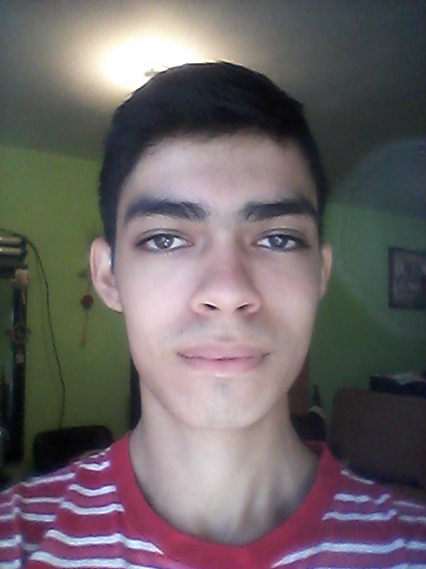
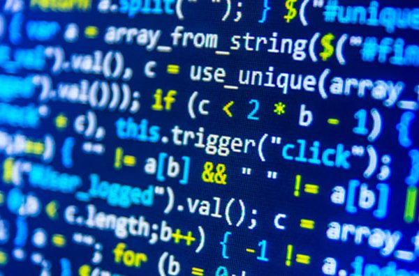

Presentación
Me presento: mi nombre es Erik Everardo Cavazos Hernández, nací en el año 2000 el día 24 de abril. Soy originario de Monterrey, Nuevo León y actualmente vivo en el municipio de Apodaca. Mis padres son: Adriana Hernández Fuentes y Everardo Cavazos Guajardo, ambos del estado de Nuevo León. Tengo una hermana: Alejandra Lizeth Cavazos Hernández; ella nació el día 29 de julio del 2002.
¿Cómo decidí qué carrera estudiar?
Muchos conocidos me decían que estudiara mecatronica otros que electrónica, argumentando que eso era lo que a mí me gustaba (o aparentaba). Lo cierto es que desde siempre yo quizé hacer mis propias aplicaciones, me parecía sumamente "complejo" o más bien alejado de mí la forma en como una aplicación está formada. Hace algunos años ignoraba por completo que existía el proceso de compilación o el proceso de interpretación, incluso desconocía todo acerca de como funcionaba Internet (que si bien parace simple, en realidad no lo es del todo). Ignoraba que existía algo más allá de Windows. Me he llegado a plantear diseñar un sistema operativo, pero esas son palabras mayores, ya que son muchos los componentes que se requieren, lo cual vuelve obligatorio trabajar en equipo.
En realidad, siempre supé que quería (y quiero) estudiar una carrera que involucrara computadoras, redes de computadoras, desarrollo de software y programación de hardware. Encontré el programa ITS en FIME que se adecuaba perfectamente a mis intereses.
¿Qué tipo de empleo quiero tener?
En realidad, no me gustaría trabajar mucho para una empresa que paga poco. Aun así, se que no es fácil empezar una empresa y mi idea es que cualquier trabajo es bueno, incluso si no está relacionado de ninguna manera con los estudios. Mi sueño es poder prosperar en mis país. Muchas personas se van del país porque no pueden encontrar oportunidades para prosperar, eso es lo que probablemente no está en mi control. Quiero formar mi empresa dedicada al desarrollo de software (si, ya se que es muy díficil).

Mas eso no quiere decir que no quiera conocer otros paises, de hecho uno de mis sueños es conocer Finlandia, porque me parece una nación muy bien formada y un lugar hermoso.


Mi persona: mis pensamientos
Me considero una persona de carácter consistente. Trato de ayudar a los demás en lo que puedo y como pueda. No me gusta ver que los otros sufran si puedo evitarlo. Estoy completamente en desacuerdo con la corrupción; si tengo que pasar por encima de alguien con trampas para lograr algo, prefiero no hacerlo o buscar otro medio.
Adoro mi país y mi lengua y procuro utilizar lo menos que se pueda términos en inglés u otra lengua.
Siempre me gusta aprender cosas nuevas, no solo de informatica, también de cultura más general. También creo que la escolaridad no define la educación de una persona; una persona con muchos estudios puede ser un idiota, no respeta a los demás, se siente superior, etc.
Considero que la informática debería estar al alcance de todo mundo que lo quiera. Asimismo, las personas que tengan acceso a Internet deben hacer uso responsable de él, siempre teniendo como prioridad el respeto a los demás.